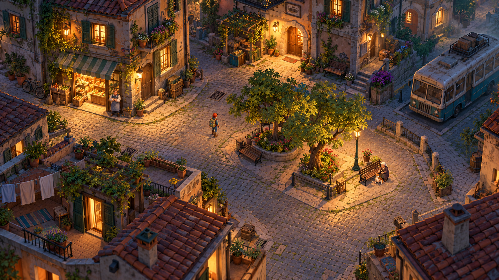
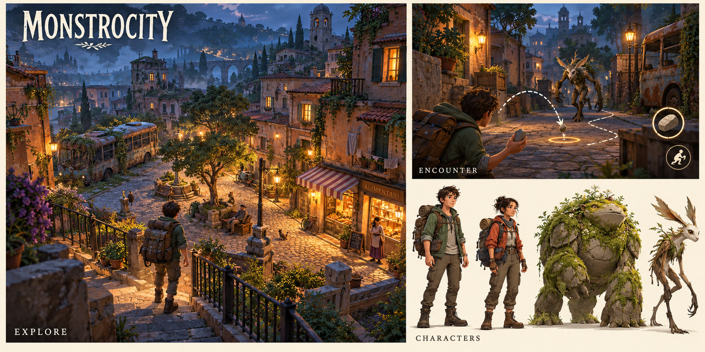

Monstrocity — визуальный прототип
ОТДЕЛЬНАЯ ИГРА · ВХОД ИЗ WORLDS
Monstrocity
Визуальный прототип · v0.1
Концепт окружения и интерактивные карта / инвентарь.
Фон — иллюстрация, не работающая 3D-сцена.

◇ УбежищеЗона смещения камеры
В макете управление неактивно Макет исследования · откройте карту или используйте припасы
Характеры и направление боя

На арт-листе показан художественный ракурс; камера исследования соответствует верхнему макету. 2D-бой и анимации здесь представлены только концептом.